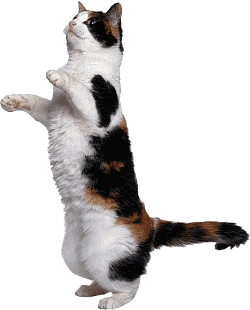
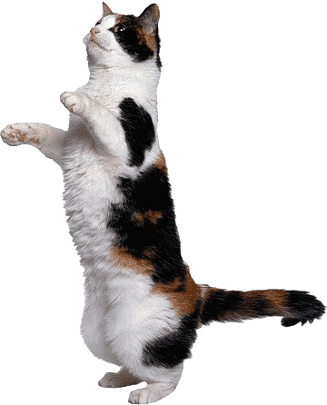

✨ Bienvenidos al mundo de los gatos Calicó ✨ ~
♦ Los gatos Calicó son conocidos por su hermoso pelaje tricolor, que incluye blanco, negro y naranja. Su apariencia única, junto con su personalidad afectuosa, los convierte en uno de los gatos más adorables. Son una raza llena de energía, curiosos y leales, lo que los convierte en una excelente compañía.
¿Te gustan los gatos? ¡Descubre todo sobre estos felinos maravillosos y aprende más acerca de su historia, cuidados y cómo tener uno como compañero!
Contáctanos para saber más sobre los gatos Calicó 🐱 
